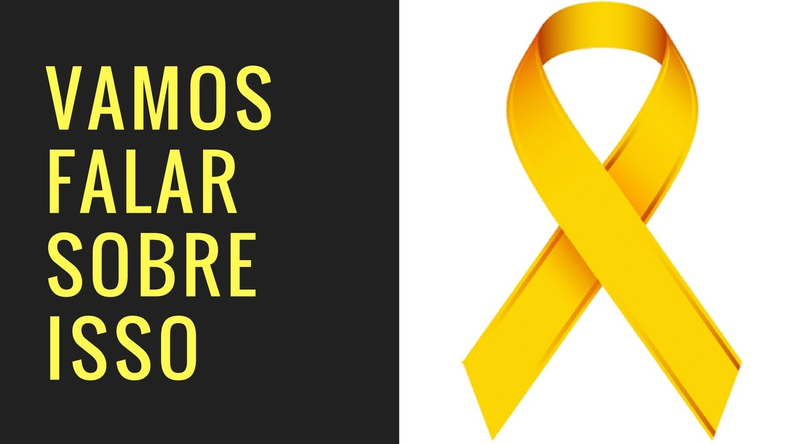
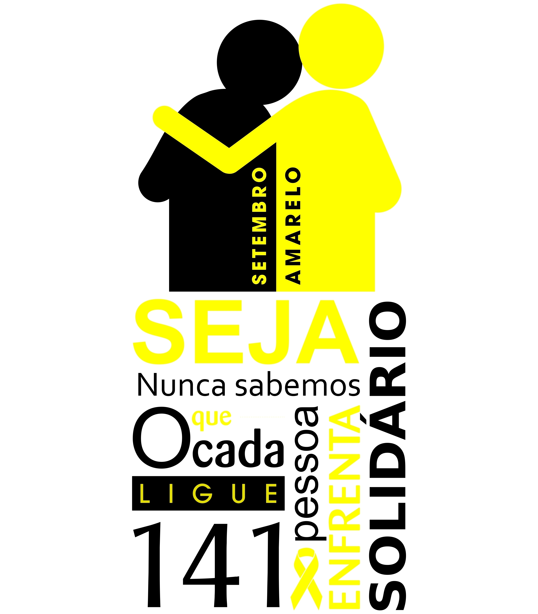

Setembro é o mês em que é realizada a campanha de conscientização sobre a prevenção do suicídio, sendo o dia 10 desse mês o Dia Mundial de Prevenção ao Suicídio. Essa campanha, conhecida como “Setembro Amarelo”, foi criada no Brasil, em 2015, pelo Centro de Valorização da Vida (CVV), Conselho Federal de Medicina (CFM) e a Associação Brasileira de Psiquiatria (ABP). Essa é uma campanha de extrema importância, uma vez que o suicídio é um problema grave de saúde pública e que, muitas vezes, pode ser evitado.
Apesar de o assunto ser delicado, é importante conversamos sobre o suicídio e maneiras como preveni-lo. Muitas pessoas pensam que esse ato é uma realidade distante e que afeta poucas pessoas, mas, infelizmente, os dados da Organização Mundial de Saúde (OMS) mostram o contrário. De acordo com a OMS, a cada 40 segundos, uma pessoa morre por suicídio em algum lugar do nosso planeta. Isso significa que, em um ano, mais de 800 mil pessoas perdem sua vida dessa forma.
As causas do suicídio são variadas e, segundo o CVV, especialistas identificam transtornos mentais na maior partes das pessoas que se suicidam ou que tentam fazê-lo. Dentre os principais transtornos observados, destacam-se a depressão na forma simples, a depressão na forma bipolar, a dependência química e a esquizofrenia. Entretanto, não podemos afirmar que todas as pessoas que cometem suicídio apresentam esses transtornos. Não podemos nos esquecer de que, muitas vezes, o suicídio acontece de maneira impulsiva diante de algumas situações muito impactantes e inesperadas da vida, como final de relacionamentos, perda de pessoas queridas, abusos ou mesmo crises financeiras. O suicídio também é comum em pessoas que sofrem discriminação, como refugiados, imigrantes, gays, lésbicas, transgêneros e intersexuais.Quando entendemos que o suicídio é uma realidade e que pode afetar pessoas a nossa volta, fica mais claro que é fundamental conversamos a respeito. Os suicídios podem ser evitados desde que tenhamos conhecimento sobre seus sintomas, suas causas e formas de evitá-lo.
Você sabia que no Brasil existe uma instituição que oferece apoio emocional e atua na prevenção do suicídio? Trata-se do Centro de Valorização da Vida (CVV), uma associação sem fins lucrativos. Caso precise conversar, basta ligar para 188 ou acessar o chat no site da CVV. O telefone e o chat funcionam 24 horas por dia, em todos os dias da semana.
Para contribuirmos na prevenção do suicídio, devemos ser capazes de perceber os sinais de alerta que uma pessoa emite. Se você perceber que uma pessoa, por exemplo, está desinteressada (até mesmo das atividades de que gostava), não tem mais a mesma produtividade na escola ou no trabalho, está isolando-se de amigos e parentes, descuidando-se da aparência, não se importa mais com suas atividades diárias ou diz muitas frases relacionadas à morte, isso pode ser sinais de que aquela pessoa está precisando de ajuda.
O primeiro passo é conversar com essa pessoa, mas aqui fica uma dica importante: deixe que a pessoa fale, sem emitir julgamentos ou opiniões sobre o assunto. Deixe bem claro que sua vontade é apenas ajudar. O que devemos lembrar sempre é que não devemos medir a dor dos outros pelas nossas experiências pessoais e entender que o que não nos afeta não necessariamente não causa dor e sofrimento no outro.É importante sempre incentivar a pessoa que está apresentando sinais de que pretende cometer suicídio a procurar ajuda especializada. Em casos visivelmente graves, é essencial que a família tenha conhecimento da situação, bem como amigos próximos, para que a pessoa seja acolhida e estimulada a procurar ajuda.Caso perceba que a pessoa corre risco imediato, é fundamental não deixá-la sozinha. Nesses casos, entre em contato com serviços de emergência e com alguém de confiança.
Dados sobre o suicídio Veja a seguir alguns dados importantes o sobre o suicídio. Dados sobre suicídio no Brasil e no mundo.